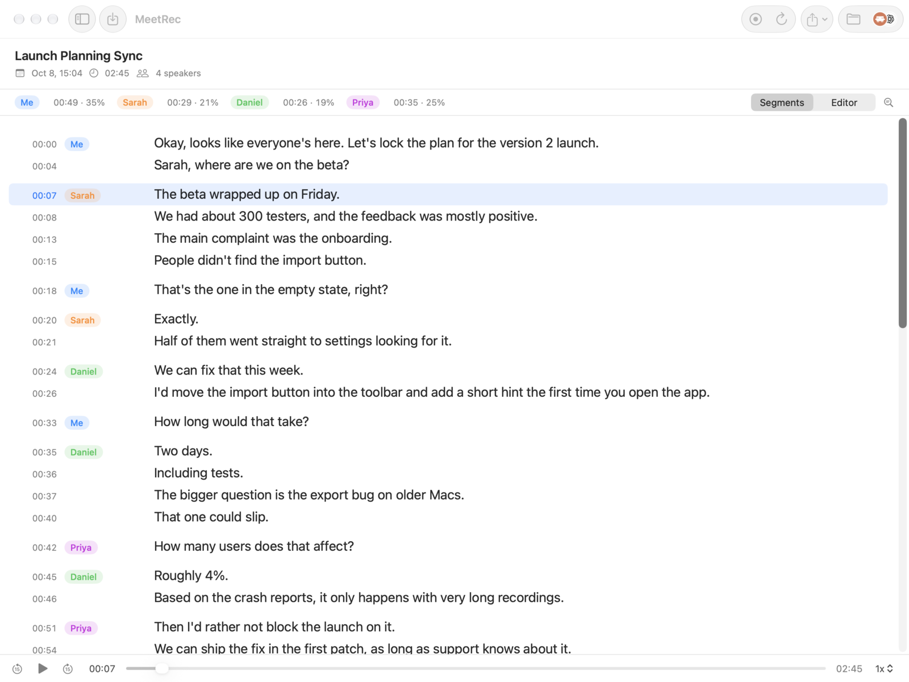
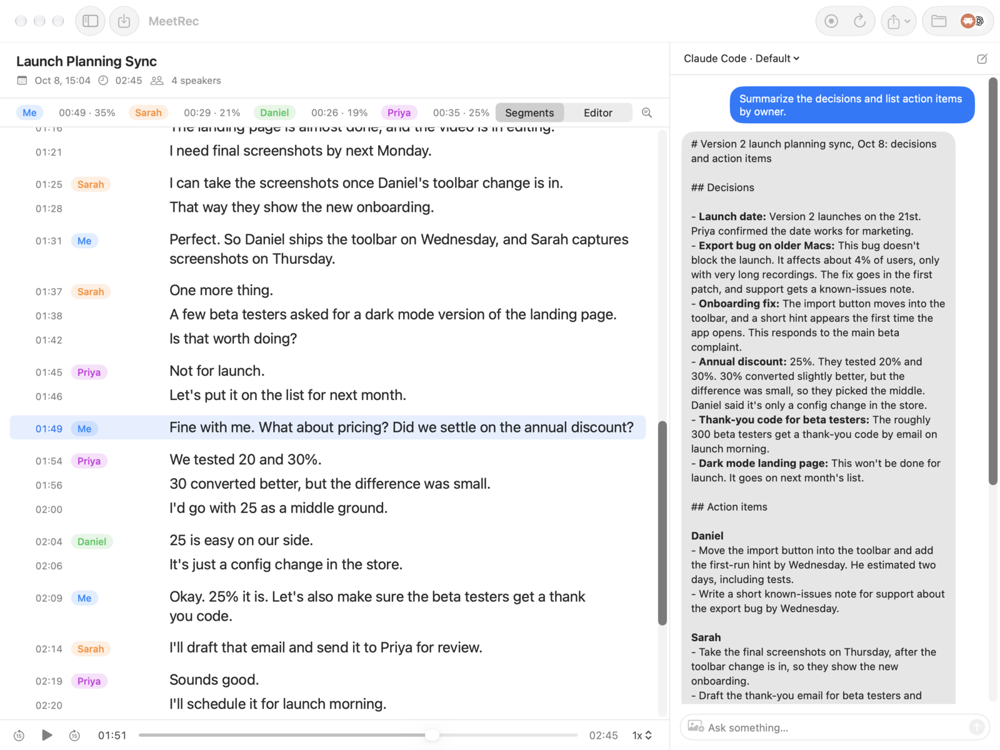
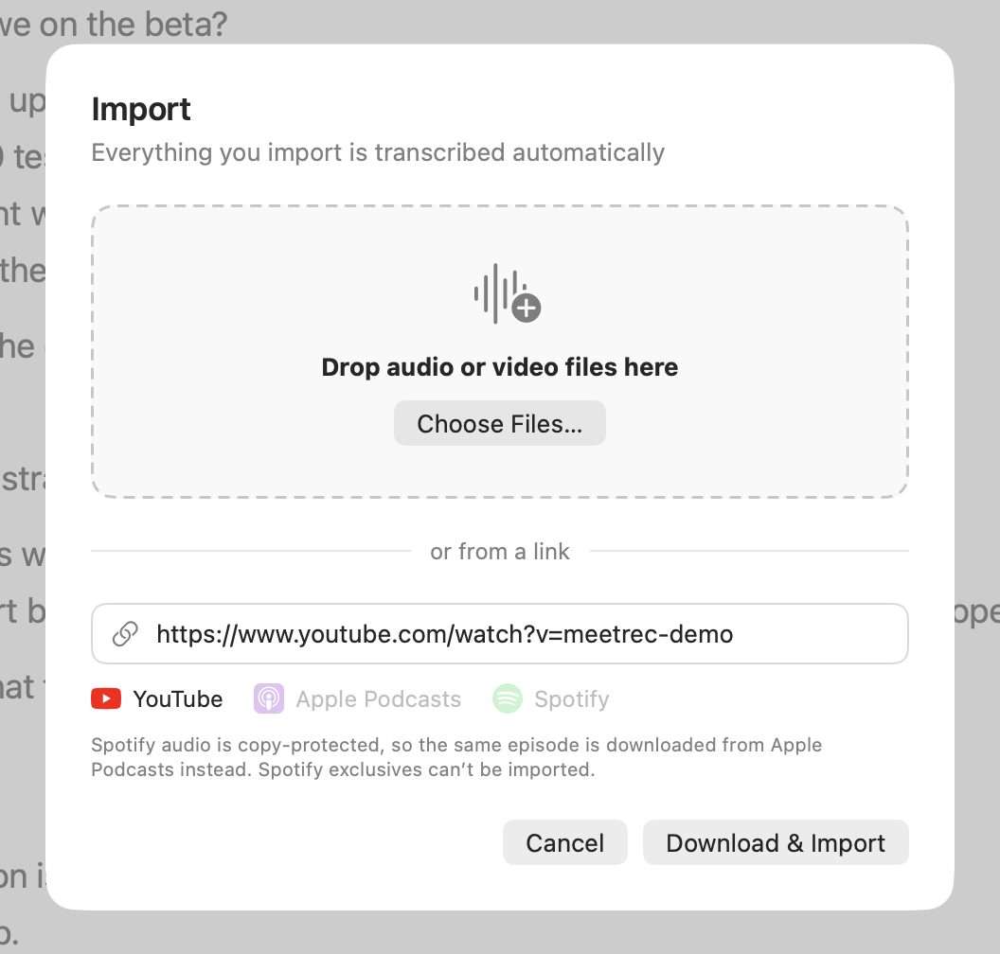
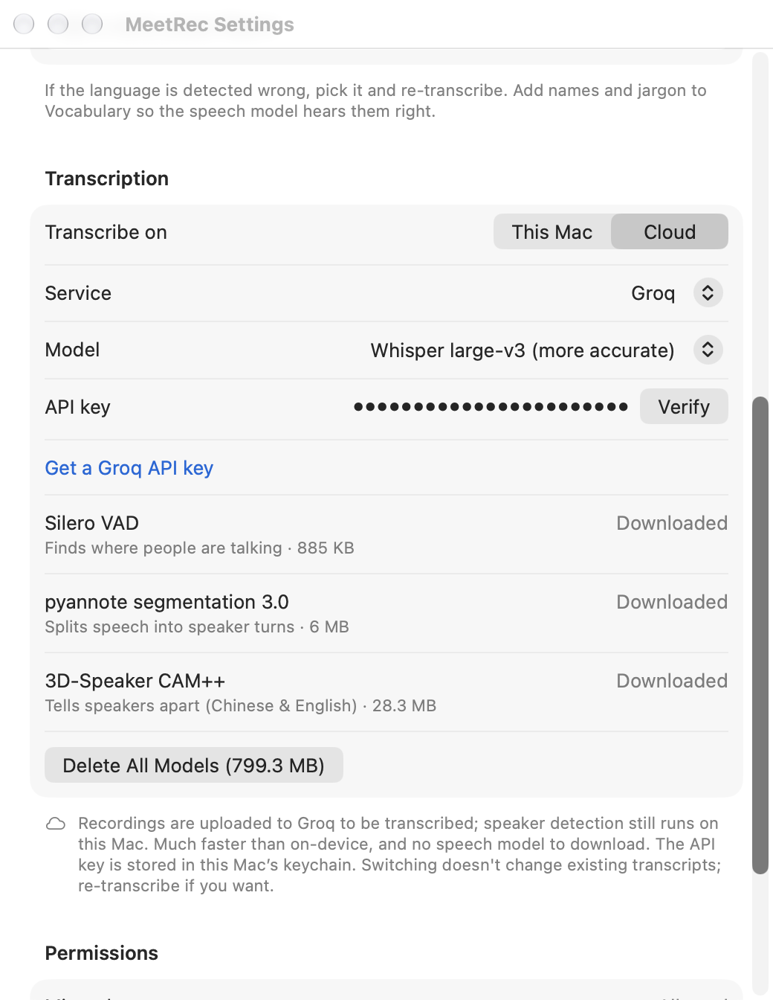

The meeting recorder that knows who said what.知道誰說了什麼的會議錄音。
MeetRec sits in your Mac’s menu bar, records the call, and turns it into a transcript where every line carries a name.MeetRec 待在 Mac 的選單列，幫你錄下會議，轉成每一句都標好說話者的逐字稿。
Free & open source · macOS 15 or later · Apple Silicon免費開源 · macOS 15 以上 · Apple Silicon
RECLaunch Planning Sync上線規劃會議00:00
MeOkay, looks like everyone’s here. Let’s lock the plan for the version 2 launch.好，人都到了。我們把第二版上線的計畫定下來。
SarahThe beta wrapped up on Friday. We had about 300 testers.Beta 週五結束了，大概有 300 位測試者。
MeThat’s the one in the empty state, right?是空白畫面那個按鈕對吧？
DanielWe can fix that this week.這週就能修好。
PriyaHow many users does that affect?這會影響多少使用者？
DanielRoughly 4%.大約 4%。
Speaker separation分辨說話者
Knows who said what知道誰說了什麼
After the call, MeetRec transcribes the recording and tells the voices apart. Every line is labeled with its speaker, so you can scan a meeting the way it actually happened. Rename a speaker once and every line they said follows.會議結束後，MeetRec 轉出逐字稿並分辨不同的聲音，每一句都標上說話者，讀起來就像會議原本的樣子。說話者的名字改一次，他說過的每一句都跟著更新。
Chinese and English detected automatically中英文自動偵測
Click a timestamp to hear that line點時間就從那句開始播

Talk time發言時間
Click a person, see their timeline點一個人，看他的發言軌跡
The bar above the transcript shows how long each person spoke and their share of the meeting. Click a name’s talk time to list every turn they took, then pick one to jump playback right there.逐字稿上方列出每個人講了多久、佔整場的比例。點某人的發言時間，就列出他每一次開口；選一段，播放直接跳到那裡。
Press ⌘E and talk about the meeting with Claude Code or Codex, the command-line tools already on your Mac. They run with your own login, so there is no extra API key to set up. Ask for a summary or action items by owner and take them straight into your work.按 ⌘E，就能跟 Mac 上已經裝好的 Claude Code 或 Codex 討論這場會議。用的是你自己的登入，不用另外申請 API 金鑰。請它整理摘要、依負責人列出待辦，直接接進你的工作流程。
Claude CodeCodex

Import匯入
Transcribe what you didn’t record沒錄到的也能轉成逐字稿
Drag in audio or video files, or paste a link to a YouTube video, a podcast episode or a Spotify episode. MeetRec downloads the audio and transcribes it with the same speaker separation, so lectures, interviews and podcasts become transcripts you can search.把音檔或影片拖進來，或貼上 YouTube、Podcast、Spotify 單集的網址。MeetRec 會下載聲音，用一樣的說話者分辨轉成逐字稿，演講、訪談、Podcast 都能拿來搜尋。
YouTube
Apple Podcasts
Spotify
Audio & video files音檔和影片
Podcast links work from Apple Podcasts and the other sites yt-dlp supports. Spotify audio is copy-protected, so MeetRec downloads the same episode from Apple Podcasts instead; Spotify exclusives can’t be imported.Podcast 支援 Apple Podcasts 和其他 yt-dlp 支援的網站。Spotify 的音檔有版權保護，MeetRec 會改從 Apple Podcasts 下載同一集；Spotify 獨家節目沒辦法匯入。

And the parts you’d expect to be fiddly還有那些本來很麻煩的小事
Asks before it records會議一開始就問你要不要錄
When a browser meeting such as Google Meet or Teams starts using the mic, or a Slack huddle begins, MeetRec offers to record. Nothing to remember to press.瀏覽器裡的 Google Meet、Teams 等會議開始用麥克風，或 Slack huddle 開始時，MeetRec 會問你要不要錄，不用記得按。
You and them, on separate channels你和對方分開收音
Your microphone goes on the left channel, everyone else on the right, so your own voice is never lost in the mix.你的麥克風在左聲道，其他人在右聲道，自己的聲音不會被蓋掉。
On your Mac, or in the cloud if you want在 Mac 上轉錄，也可以選雲端
Transcription runs on your Mac with Whisper by default. For speed, switch to cloud transcription with your own Groq or OpenAI key; speaker detection still stays on your Mac.預設在 Mac 上用 Whisper 轉錄。想快一點，可以填自己的 Groq 或 OpenAI 金鑰改用雲端轉錄，說話者辨識仍在本機。
Fix it, then take it with you改好再帶走
Edit text in place, rename speakers, replace all, and export to SRT or TXT.直接改字、改說話者名字、全部取代，匯出 SRT 或 TXT。
Teach it your words教它認得你的用詞
Add names and jargon to Vocabulary so the speech model hears them right.把人名和專有名詞加進「常用詞」，語音模型就比較聽得懂。

Your meetings stay on your Mac會議留在你的 Mac 上
Recording, transcription and speaker detection run locally by default. Recordings are saved in your Music folder.錄音、轉錄和說話者辨識預設都在本機執行，錄音存在「音樂」資料夾裡。
Goes online only when you choose只有你選擇時才連網
Model download. The first transcription fetches the speech models from Hugging Face.下載模型。第一次轉錄時從 Hugging Face 下載語音模型。
Importing a link. MeetRec downloads the audio from that link, and fetches the yt-dlp downloader from GitHub the first time.從網址匯入。MeetRec 會從那個網址下載聲音，第一次使用時從 GitHub 下載 yt-dlp 下載工具。
Cloud transcription. If you switch it on, audio is sent to Groq or OpenAI with your own key.雲端轉錄。你打開的話，錄音會用你自己的金鑰送到 Groq 或 OpenAI。
AI chat. When you use the side panel, the transcript goes to Anthropic or OpenAI through your own Claude Code or Codex.AI 對話。使用側欄時，逐字稿會透過你自己的 Claude Code 或 Codex 送到 Anthropic 或 OpenAI。
Ask first先問過大家
Get consent from everyone in the meeting before you record, and follow the laws where you are.錄音前請先取得與會者同意，並遵守當地法律。
Record your next meeting with names attached.下一場會議，連名字一起錄下來。